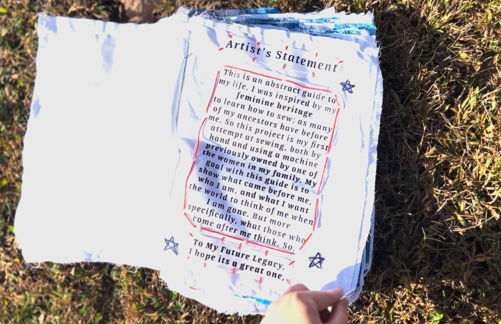
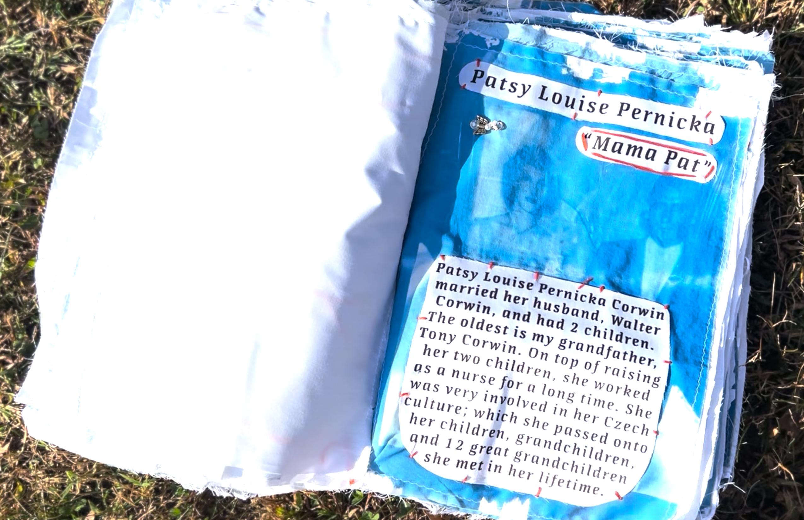
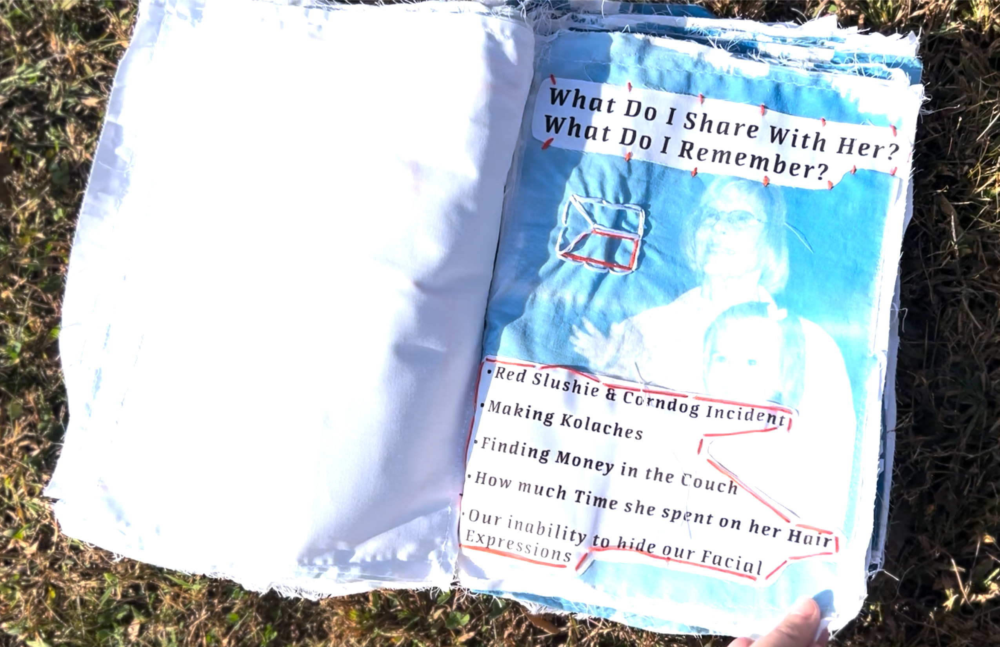
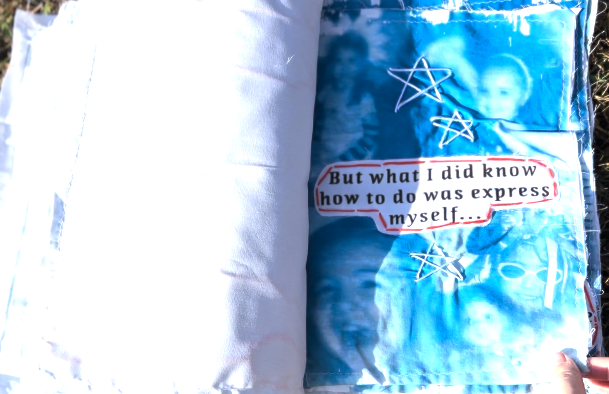
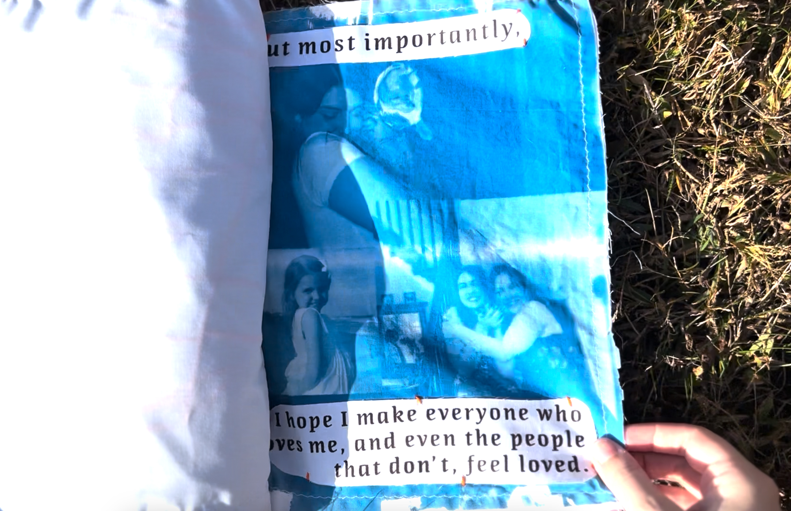

Legacy Book
2024
I created this "guide" to explores both my personal ancestry and my reflections on it. It delves into the intersection of matriarchal legacy and my individual identity. In an attempt to deepen the conceptual connection to my heritage, I decided to work entirely with textiles. Which was my first experience of sewing as a conscious homage to the crafts of many of my female ancestors. By adopting their medium, the project becomes an intimate connection between the past and present, turning a traditional craft into a physical story of self-reflection.




